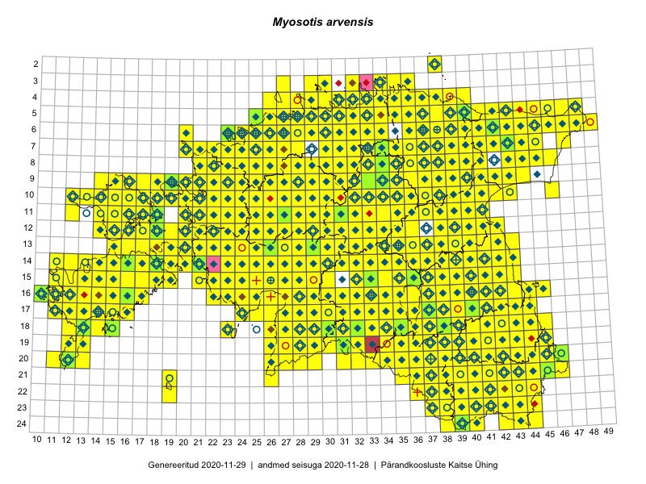

Myosotis arvensis
Uuendatud: 2016-12-01
Kaardile koondatud taksonid: Myosotis arvensis (L.) Hill

Kaart põhineb 894 kirjel, neist vaatlusi 889 ja eksemplare 5.
Kuvatud viited 20 esimesele andmebaasikirjele, ülejäänud PlutoFis
- Malle Leht: 2015-07-09: : ala
- Toomas Kukk: 2015-06-23T14:30Z: 21-45: ala
- Thea Kull: 2015-07-07: 16-40: ala
- Rein Kalamees: 2015-06-08: 05-32: ala
- Peedu Saar, Toomas Kukk: 2015-05-28: 11-17: ala
- Peedu Saar, Toomas Kukk: 2015-05-28: 10-15: ala
- Peedu Saar, Toomas Kukk: 2015-05-27: 09-16: ala
- Toomas Kukk, Eerik Leibak: 2015-08-09: 14-15: ala
- Toomas Kukk, Eerik Leibak: 2015-08-08: 15-18: ala
- Toomas Kukk, Thea Kull, Timo Luhamäe, Ott Luuk, Peedu Saar: 2015-06-28: 13-26: ala
- Toomas Kukk, Eerik Leibak: 2015-08-12: 10-17: ala
- Toomas Kukk, Eerik Leibak: 2015-08-12: 09-17: ala
- Toomas Kukk, Eerik Leibak: 2015-08-10: 09-14: ala
- Toomas Kukk, Eerik Leibak: 2015-08-10: 13-15: ala
- Peedu Saar, Toomas Kukk: 2015-05-26: 10-16: ala
- Tiit Hallikma, Indrek Tammekänd, Toomas Kukk: 2015-06-09: 12-29: ala
- Tiit Hallikma, Toomas Kukk: 2015-07-21: 05-45: ala
- Rein Kalamees: 2015-08-09: 05-31: ala
- Rein Kalamees, Kersti Püssa: 2015-09-02: 03-36: ala
- Ott Luuk, Toivo Sepp: 2015-07-29: 09-31: ala